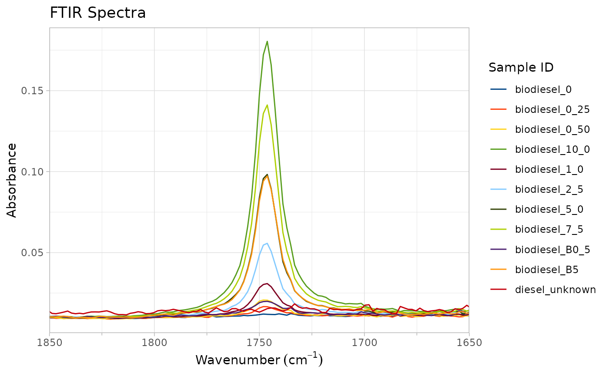

It's common to be interested in only a small portion of the FTIR range. In these cases, this function will zoom the spectral plot to the range provided.
Il est courant de s'intéresser uniquement à une petite partie de la gamme IRTF. Dans ces cas, cette fonction permet de zoomer sur le tracé spectral sur la gamme fournie.
Usage
zoom_in_on_range(ftir_spectra_plot, zoom_range = c(1000, 1900))Arguments
- ftir_spectra_plot
A plot generated by [plot_ftir()] or [plot_ftir_stacked()]. Un tracé généré par [plot_ftir()] ou [plot_ftir_stacked()].
- zoom_range
A vector of length two, with the wavenumber range of interest. Order of provided limits is not important.
Un vecteur de longueur deux, avec la gamme de nombres d'ondes de d'intérêt. L'ordre des limites fournies n'est pas important.
Value
the FTIR plot as a ggplot2 object, with x axis limits as those supplied by
zoom_range.
le tracé IRTF en tant qu'objet ggplot2, avec des limites d'axe x comme
celles fournies par zoom_range.
Examples
if (requireNamespace("ggplot2", quietly = TRUE)) {
# Generate a plot
biodiesel_plot <- plot_ftir(biodiesel)
# Zoom to a specified range of 1850 to 1650 cm^-1
zoom_in_on_range(biodiesel_plot, c(1650, 1850))
}
